Ficha de Inspeção Cadastral - Ponte Corticeira
Inspeção realizada no dia 23/07/2020 por Prefeitura Municipal de Iraí. Código da OAE não informado
-
placeIdentificação e Localização
Via ou municípo: Iraí, RS
Nome da OAE: Ponte Linha Corticeira
Ano de construção (ou época aprox.): 14/03/2016
Trem-tipo: TB-450
Sentido: Duplo
Localização (km ou endereço): Corticeira
Coord. Geo. (long./lat.): 27° 15' 6'' | 53° 13' 52''
Projetista: Não identificado
Construtor: Não identificado
-
placeCaracterísticas da Estrutura
Comprimento total (m): 25,6
Largura da faixa (m): 4,05
Largura do acostamento (m): Não há
Largura do refúgio (m): Não há
Largura do passeio (m): Não há
Sistema construtivo (ver Tabela A3): Pré-moldado
Natureza da transposição (ver Tabela A4): Superfície aquífera
Material (ver Tabela A5): Concreto armado
Secão tipo
Longitudinal da superestrutura (ver Tabela A2): Contínua
Transversal da superestrutura (ver Tabela A2): Transversal da superestrutura (ver Tabela A2):
Mesoestrutura (ver Tabela A2): Pilar com travessa
Características Particulares
Número de vãos: 2
Número de apoios: 1
Número de pilares por apoio: 1
Aparelhos de apoio (quantidade de tipo): Não há
Comprimento do vão típico (m): 12,8
Comprimento do maior vão (m): 12,8
Altura dos pilares (m): 5,3 (aprox.)
Juntas de dilatação (quantidade e tipo): Não há
Encontros: Concreto armado
Outras peculiaridades: Valor da obra: R$ 321.952,08
-
whatshotCaracterísticas Funcionais
Características plani-altimétricas: Região ondulada, traçado tangente
Número de faixas: 1
Acostamento: Não
Refúgios: Não
Passeio: Não
Barreira rígida: Não
Material do pavimento: Asfalto
Pingadeiras: Não
Guarda-corpo: Não
Drenos: Não
Frequencia passagem carga especial: Baixa
-
whatshotRegistro de Anomalias
Elementos estruturais
Superestrutura: Manchas decorrentes da percolação da água por ausência de pingadeira, leve erosão do concreto devido à intempéries.
Mesoestrutura: Fissuras/trincas nos apoios que denunciam a falta de algum tipo de aparelho de apoio, galhos enroscados no pilar, leve erosão do concreto.
Infraestrutura: Não foi possível avaliar
Aparelhos de apoio: Não há
Juntas de dilatação: Não há
Encontros: Fissuras/trincas com infiltrações
Elementos da pista ou funcionais
Pavimento: Coberto de terra quase que totalmente com vegetação crescendo (sujeira pode estar escondendo possíveis patologias).
Acostamento e refúgio: Não há
Drenagem: Não há
Guarda-corpo: Não há
Barreiras concreto/defensa metálica: Não há
Outros elementos:
Taludes: Não há
Iluminação: Não há
Sinalização: Não há
Proteção de pilares: Não há
-
whatshotClassificação da OAE
Parâmetros Superestrutura Mesoestrutura Infraestrutura Nota final Estrutural 4 2 - 2 Funcional 2 - - 0.67 Durabilidade 3 2 - 1.67 -
photoImagens

- 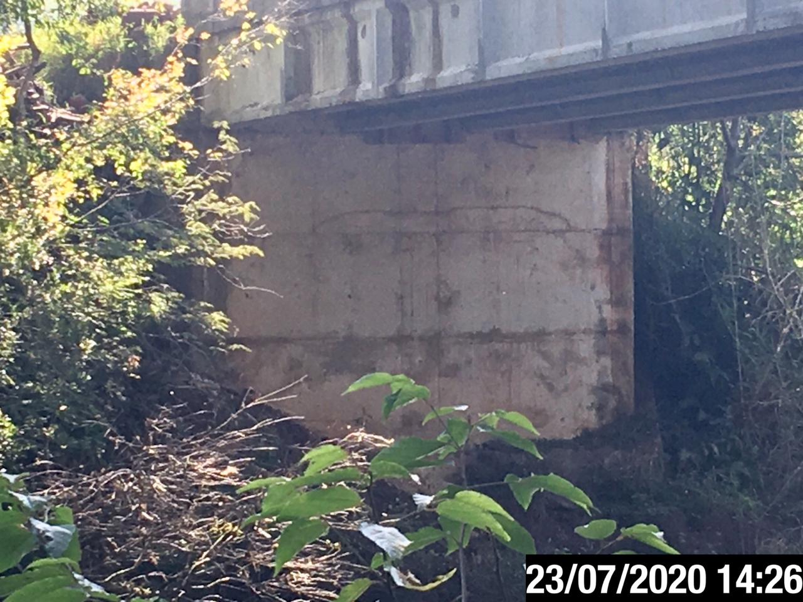
- 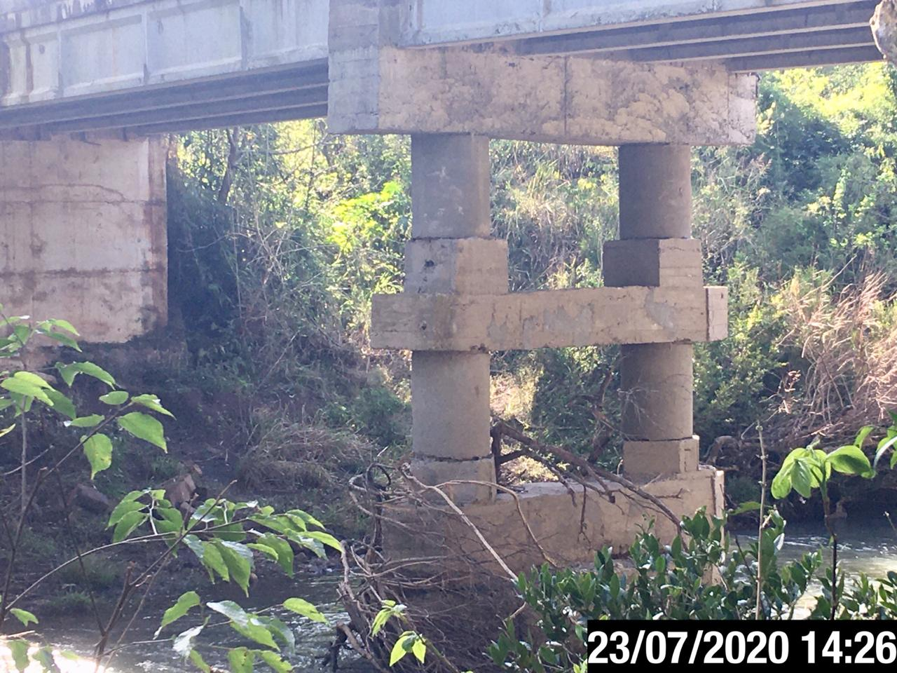
- 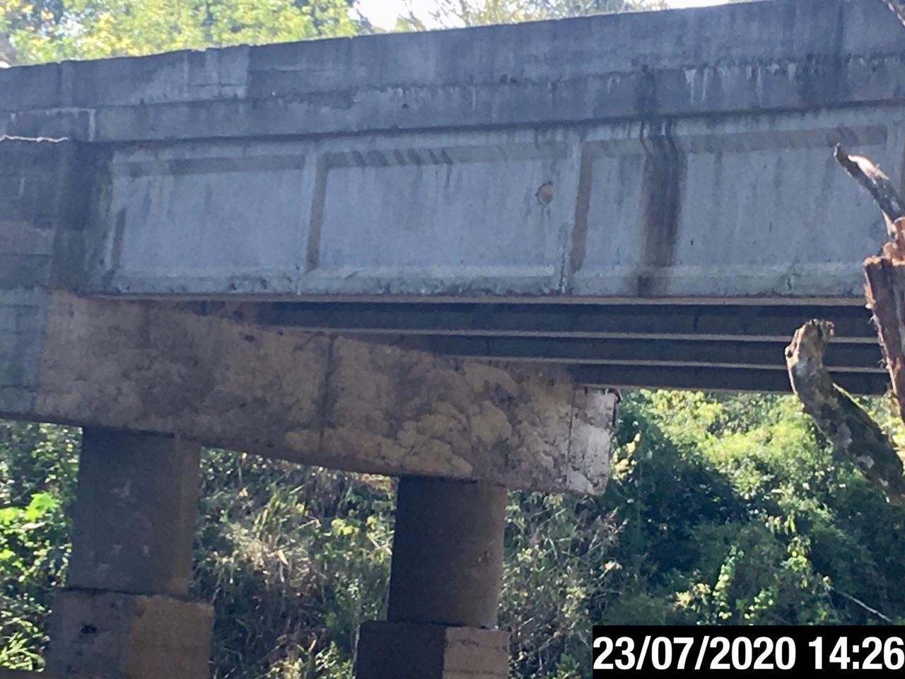
- 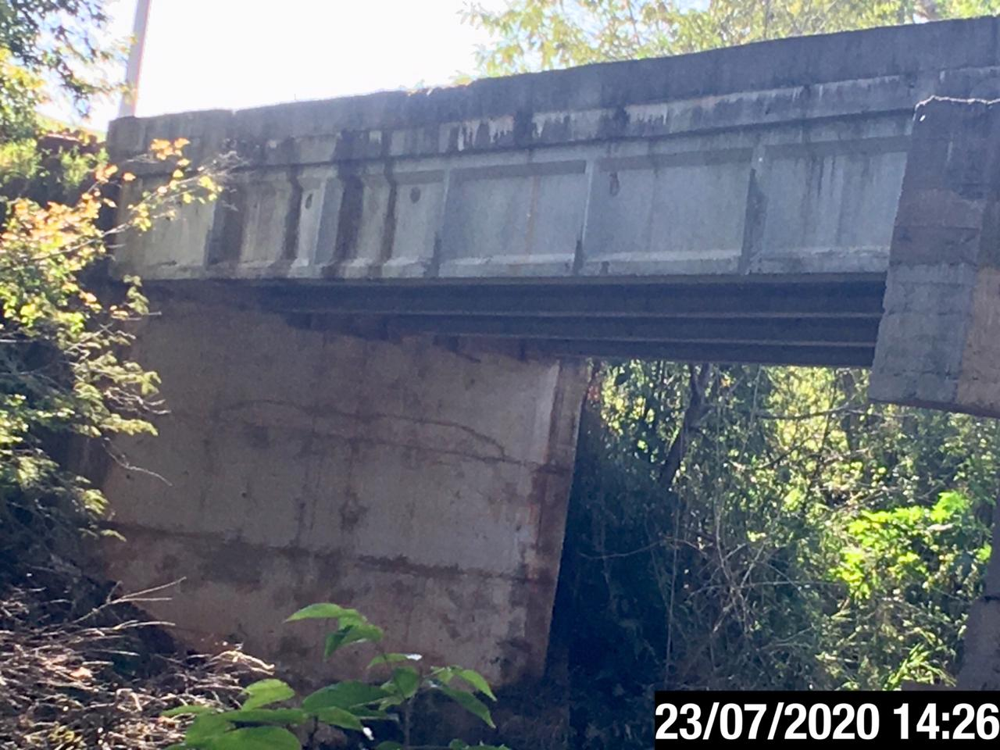
- 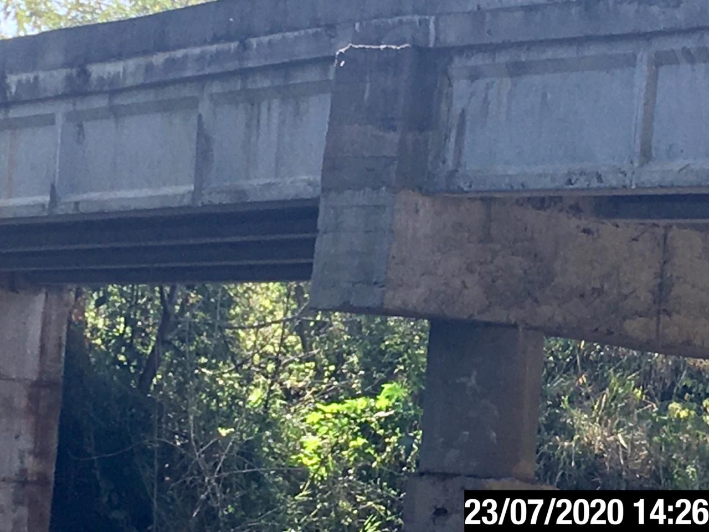
- 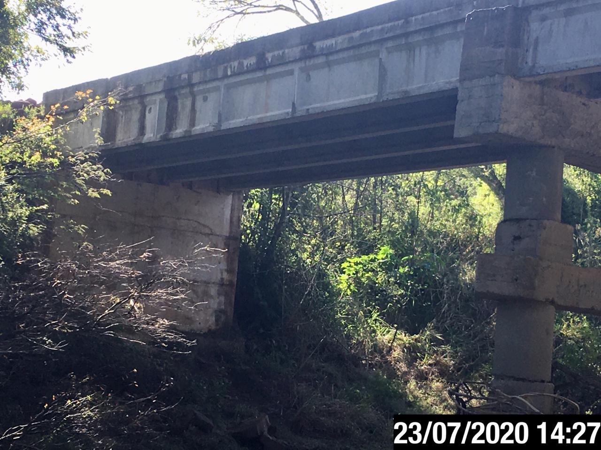
- 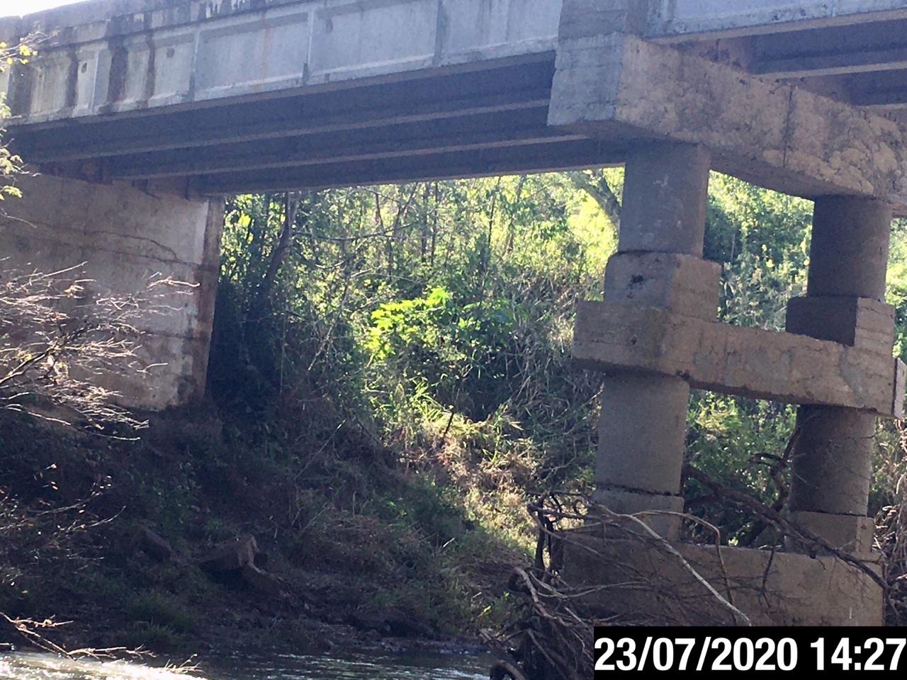
- 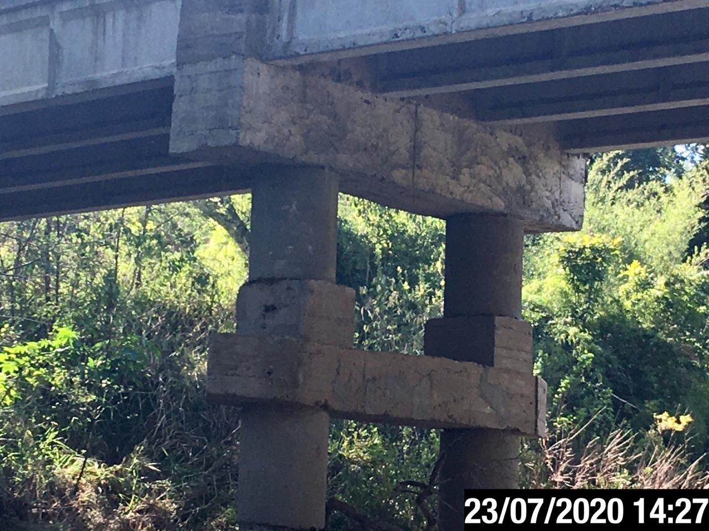
- 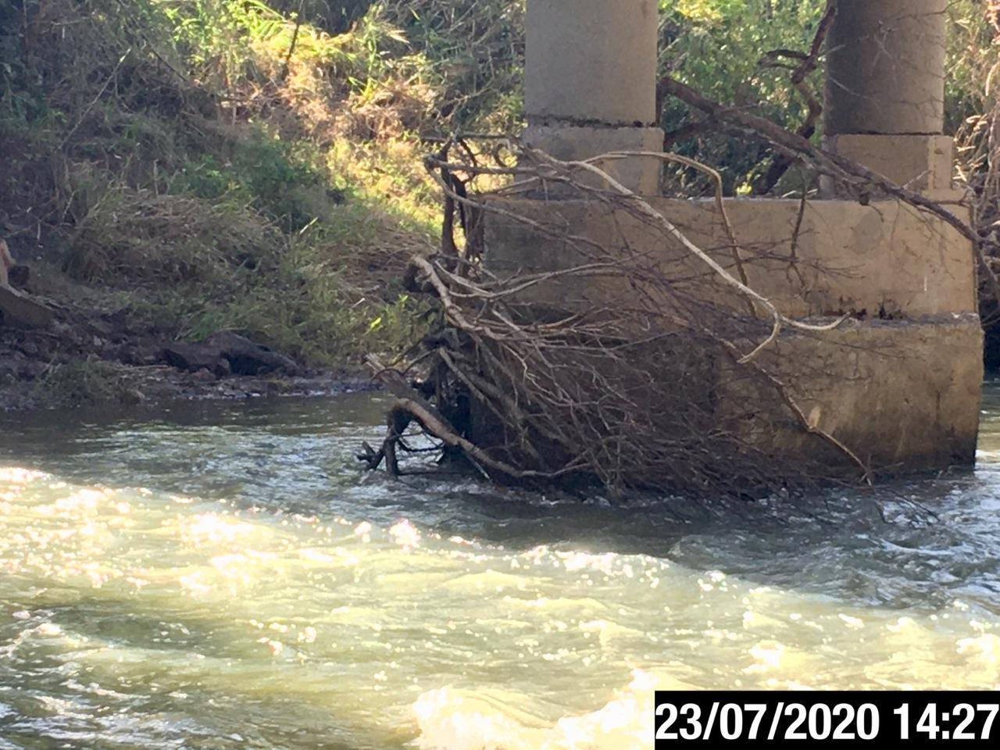
- 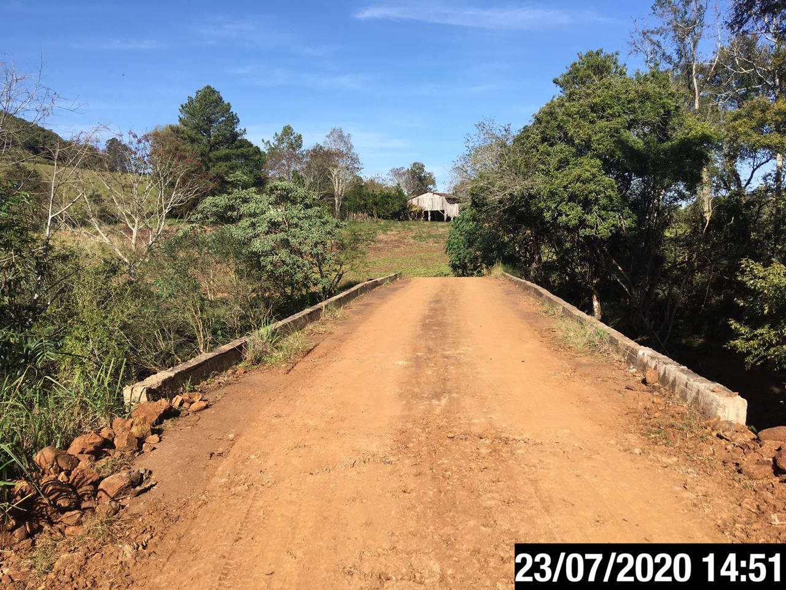
- 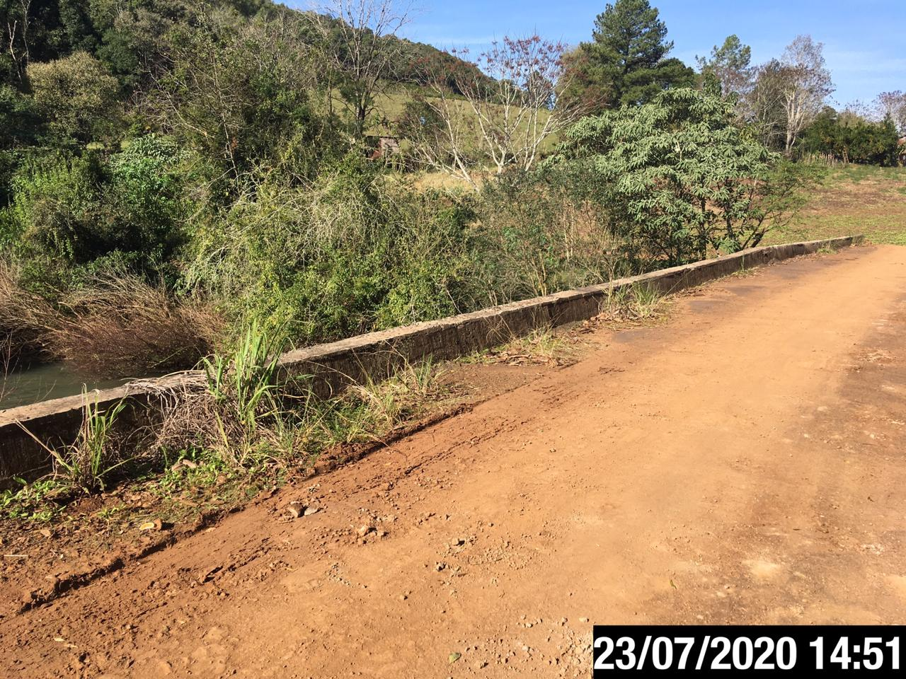